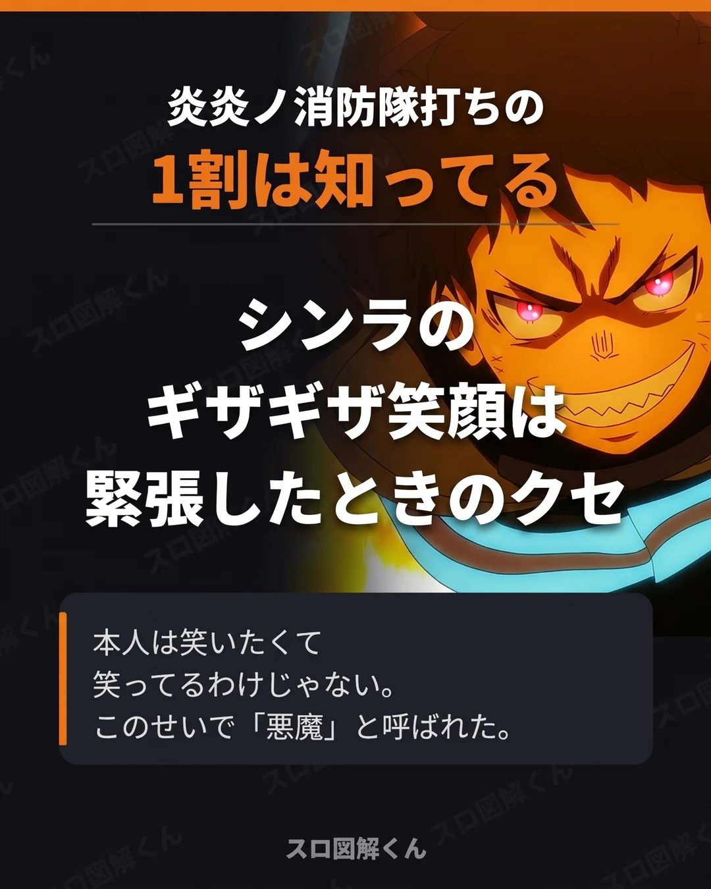

炎炎ノ消防隊打ちの1割は知ってる
確認日：2026年10月17日

この画像の内容をテキストで見る
シンラのギザギザ笑顔は、緊張したときのクセ
シンラは緊張したり、怒りや恐怖を感じたりすると、ひきつった笑顔になってしまう。
原因は12年前の火事のショック。この笑顔と、火事が彼のせいだという誤解が重なって、周りから「悪魔」と呼ばれていた。
原作（漫画・アニメ）の設定です。パチスロ実機の演出とは関係ありません。
Lパチスロ 炎炎ノ消防隊2を1枚の画像で
確認日：2026年10月17日

シンラは緊張したり、怒りや恐怖を感じたりすると、ひきつった笑顔になってしまう。
原因は12年前の火事のショック。この笑顔と、火事が彼のせいだという誤解が重なって、周りから「悪魔」と呼ばれていた。
原作（漫画・アニメ）の設定です。パチスロ実機の演出とは関係ありません。